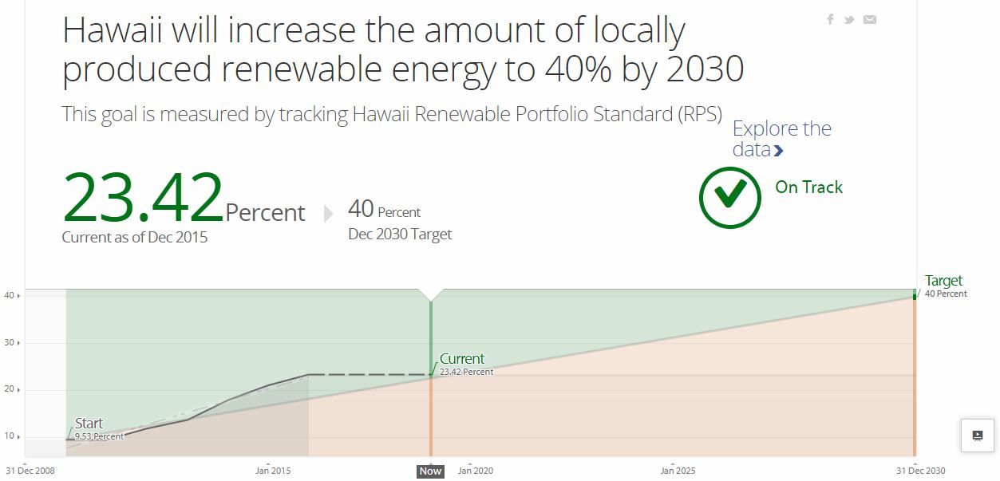
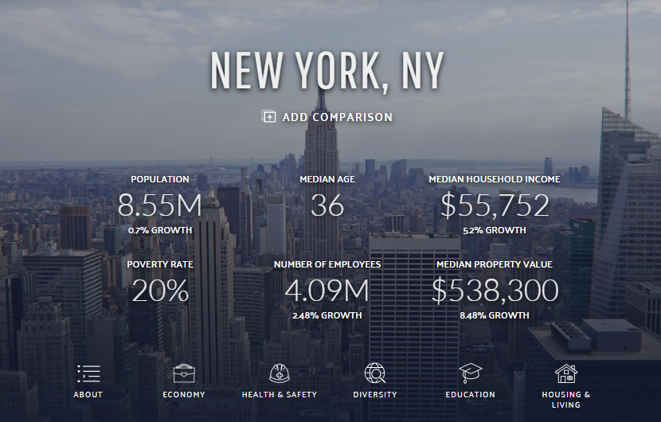
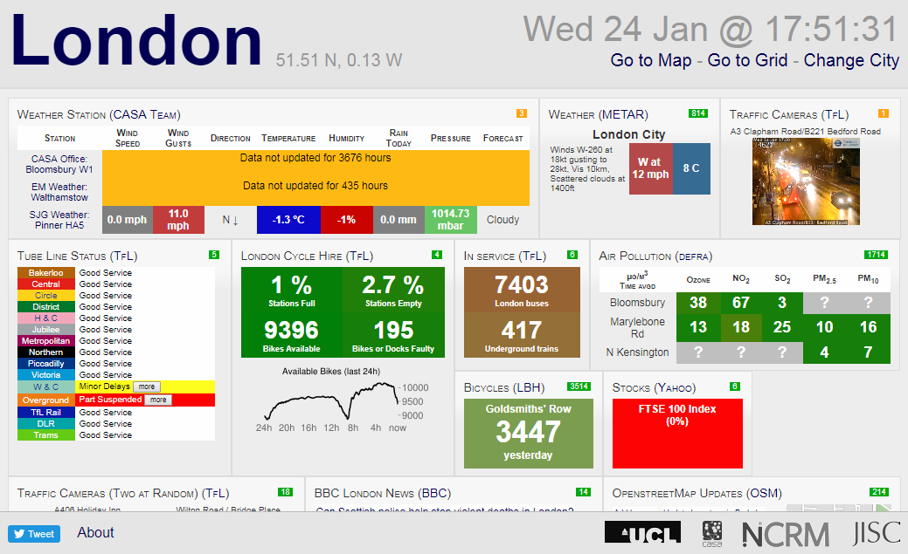
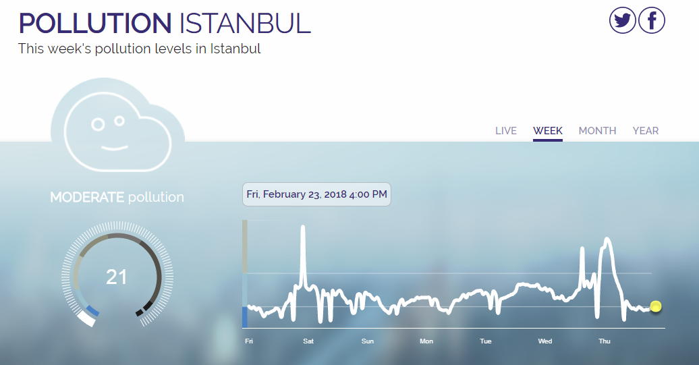
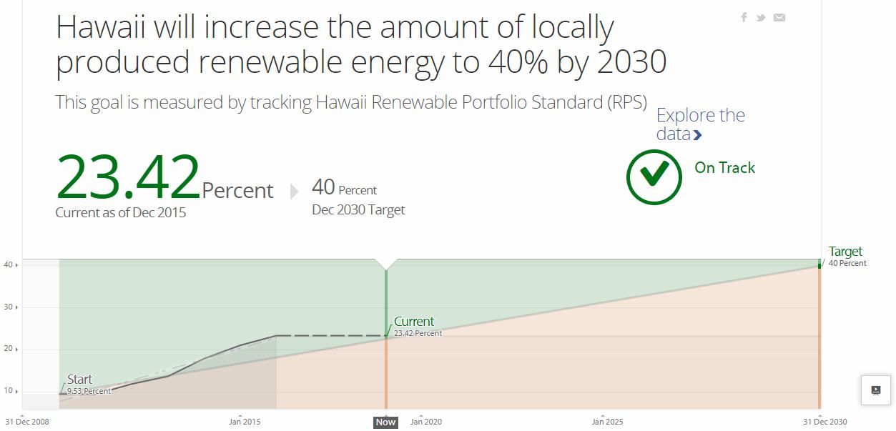
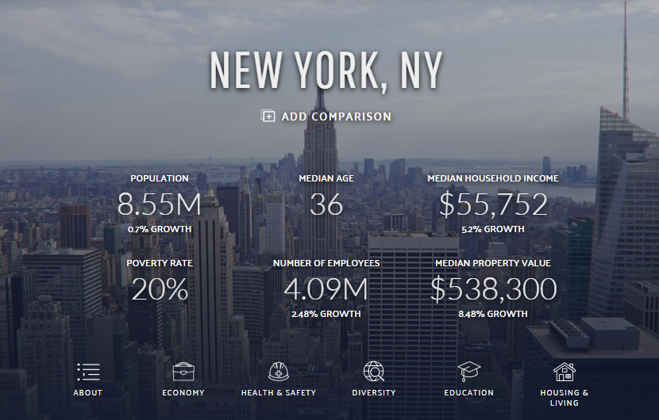
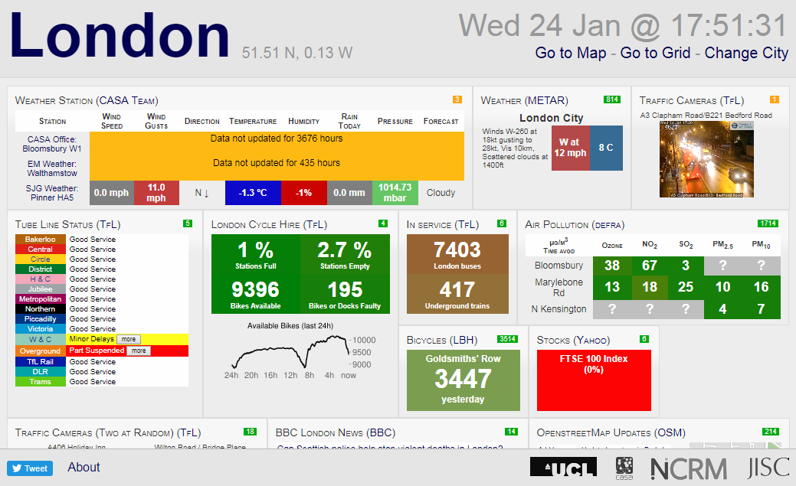
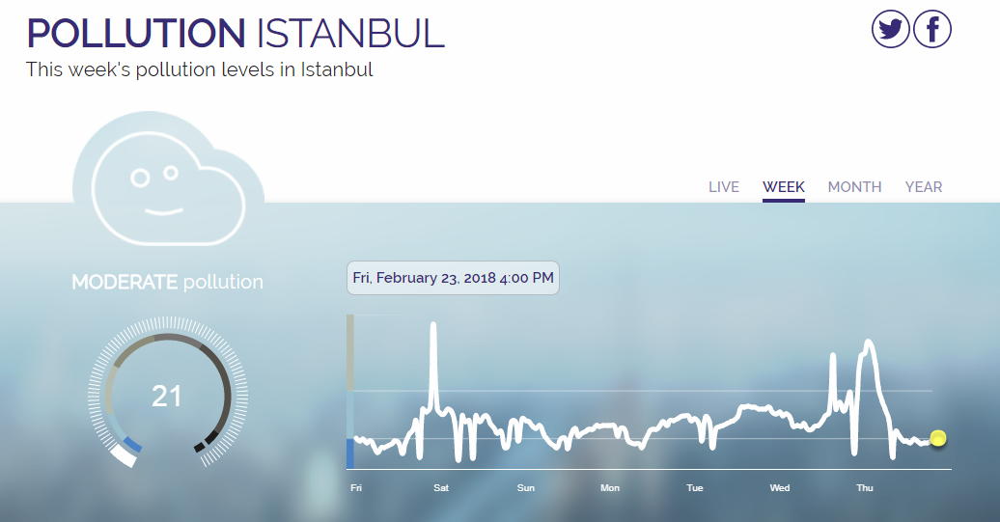

Visual indicators of real-timeness in city dashboards
Sam Stehle / @sam_stehle
Rob Kitchin / @RobKitchin
Building City Dashboards
National Centre for Geocomputation, Maynooth University, Maynooth Ireland
 







manual refresh
no interruption to pattern analysis
requires interaction
automatic refresh
preference for passive observation
high risk of change blindness
Time until next update

highest impression of real-timeness
lifespan of the data
can plan for data loss
Time since last update
age of the data
cannot infer refresh rate without sustained observation
can you prove veracity?
compare multiple sensors in real-time
selection is inconvenient and inefficient
cartographic techniques (value and hue)
comparison with archival data
linear time series representations are familiar
but prioritise time over spatial comparison
Indicator of refresh type
manually updating an automatic display
= lack of perceived control
automatic assumption of a manual display
= no update, real-time is lost
indicator of refresh rate
necessary when data updates at different rates
inferrable only with sustained observation
| spatial | real-time | manual refresh | auto refresh | refresh style indicator | time of last | time until next | clock time updates | refresh rate indicator | compare in real-time | archive | archive timing control | benchmarking | |
|---|---|---|---|---|---|---|---|---|---|---|---|---|---|
| Best et al | -- | ✔ | ✔ | -- | ✔ | ✔ | -- | ✔ | -- | ✔ | ✔ | -- | -- |
| Boston Transport | ✔ | ✔ | -- | ✔ | -- | ✔ | -- | ✔ | -- | -- | -- | -- | -- |
| CEI Moncloa | ✔ | ✔ | -- | ✔ | ✔ | ✔ | -- | ✔ | ✔ | ✔ | ✔ | -- | -- |
| Columbus | ✔ | -- | ✔ | -- | -- | ✔ | -- | ✔ | -- | -- | ✔ | -- | -- |
| DataTonic | ✔ | -- | ✔ | -- | -- | -- | -- | ✔ | -- | -- | ✔ | ✔ | -- |
| Dublin | ✔ | ✔ | -- | ✔ | -- | -- | -- | -- | ✔ | ✔ | -- | -- | -- |
| Human | -- | ✔ | -- | -- | -- | ✔ | -- | ✔ | -- | ✔ | ✔ | -- | ✔ |
| London | -- | ✔ | ✔ | ✔ | ✔ | -- | ✔ | -- | ✔ | ✔ | -- | -- | -- |
| Oberlin Water | -- | ✔ | -- | ✔ | -- | ✔ | -- | ✔ | ✔ | -- | ✔ | ✔ | ✔ |
| Plume Labs | -- | ✔ | -- | ✔ | -- | ✔ | -- | ✔ | ✔ | -- | ✔ | ✔ | -- |
| Southeast Area Transit | ✔ | ✔ | -- | ✔ | -- | ✔ | -- | ✔ | -- | ✔ | -- | -- | -- |
| Veridict/Travic | ✔ | ✔ | -- | ✔ | ✔ | -- | -- | -- | -- | ✔ | -- | -- | -- |
| Virtual London (ViLo) | ✔ | ✔ | -- | ✔ | ✔ | -- | -- | -- | -- | ✔ | -- | -- | -- |
taxonomy of dashboard design
strategies create redundancies
no standardisation
consider who dashboards are produced for
generally take simple visual approaches
improving dashboard design
lack of methods for recall of specific times
new useful forms of representation
improving dashboard design
improving dashboard design
lack of methods for recall of specific times
new useful forms of representation
create 'best practices' guides for dashboard design
test strategies on both public and authoritative users
using dublindashboard.ie as a live testbed
Sam Stehle
Sam.Stehle@mu.ie
@sam_stehle
dublindashboard.ie
dashboards.maynoothuniversity.ie